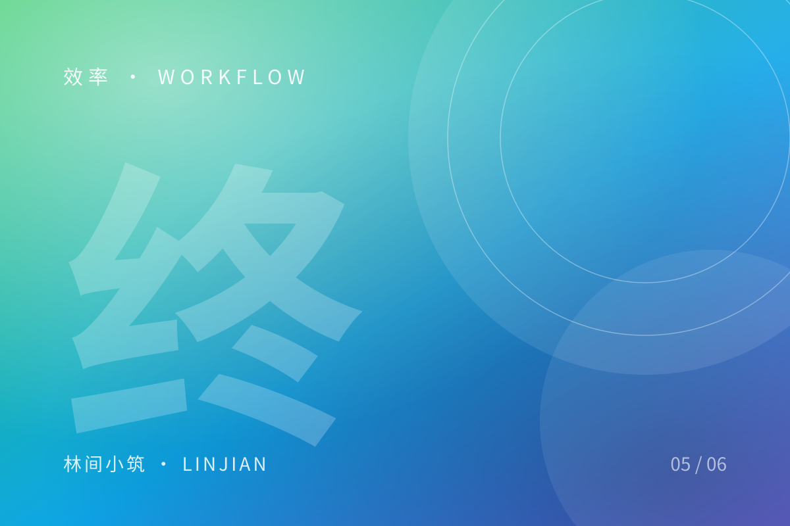

我的终端工作流（2026 版）

每天有八个小时待在终端里，配置顺手一点，收益是复利的。这份清单每年更新一次，今年删掉的比加上的多。
Shell：zsh + 少量插件
zsh-autosuggestions：按历史补全，几乎不用再手打长命令zsh-syntax-highlighting：命令拼错时立刻变红fzf：模糊搜索文件、历史、分支
别名只留高频的
alias gs='git status -sb'
alias gd='git diff --stat'
alias ll='eza -lah --git'
alias serve='python3 -m http.server 8000'别名不是越多越好。记不住的别名等于不存在。
tmux：一个窗口，三个面板
左边编辑器，右上跑测试，右下看日志。所有项目统一用 tmux new -s work，断线重连也不丢现场。
一个原则
工具链的价值在于减少决策。如果某个配置让你每次都要想一下「这个键是干嘛的」，那它就该删掉了。